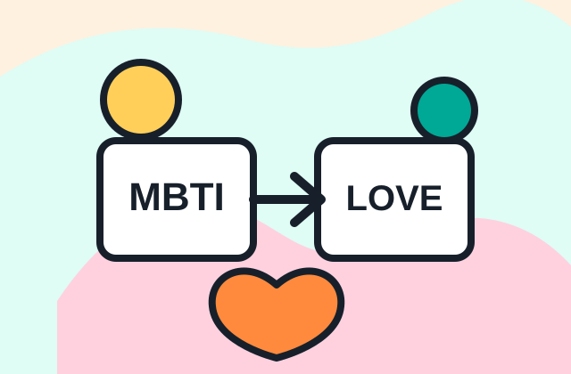

Summary
現在の集計
Tendency
相性傾向の土台
左右バー版・グラフ版のどちらにも差し替えられるよう、今は軸ごとの数値だけを共通表示しています。
MBTI傾向
Love Type傾向
Comment
ひとことコメント
まだ結果が少ないため、コメントは仮表示です。
この結果は一般論ではなく、Team17メンバーの主観をもとにしたエンタメ用の相性傾向です。
Insight Summary
各メンバーとの一致度をまとめ、相性が良さそうなMBTIとLove Typeの傾向を表示します。
Summary

Tendency
左右バー版・グラフ版のどちらにも差し替えられるよう、今は軸ごとの数値だけを共通表示しています。
Comment
まだ結果が少ないため、コメントは仮表示です。
この結果は一般論ではなく、Team17メンバーの主観をもとにしたエンタメ用の相性傾向です。